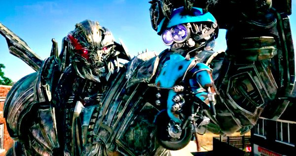
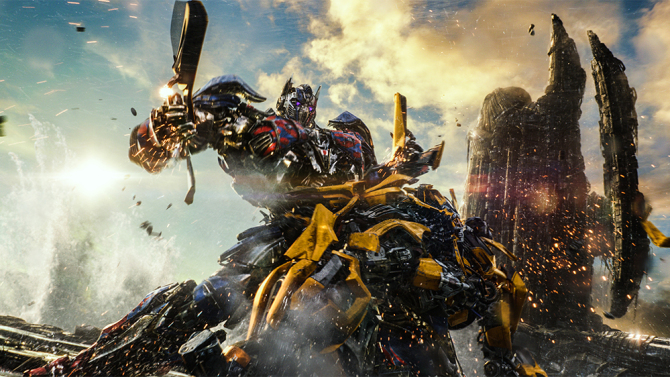
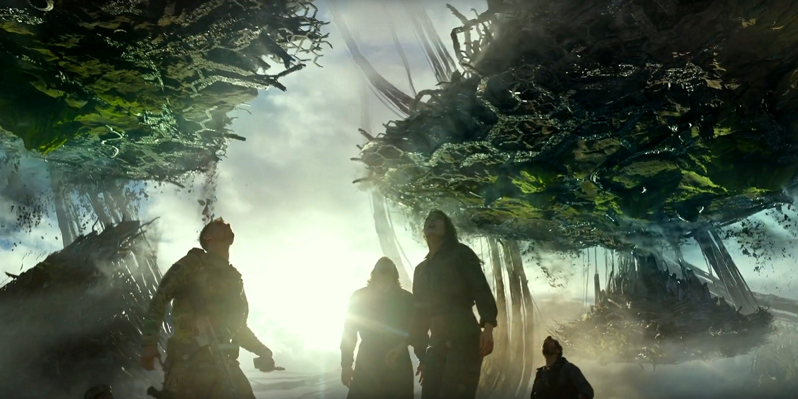

The Last Knight
is a bold move on Hasbro's part; it's the first step in bringing Transformers
into a broader "cinematic universe", with Transformers movies due out every
year for at
least
the next two years after this movie. To accomplish
this herculean task, Ehren Kreuger-- the writer of part of Transformers
2, 3, and 4--was kicked out and a whole lot of writers were brought in
for a big "brainstorming session" to help set up this broader universe,
many of these writers having written many critically acclaimed films. Although
I was never one that bought into the notion that Transformers (particularly
2 through 4) were garbage-- as can be obviously seen from my scores for
the previous movies (though if I didn't have a policy of not "re-reviewing"
things, my score for
Revenge of the Fallen
would have been noticeably lower)-- critical reception for them was undeniably
awful, and this was likely the reason for the change-up in writers. It
brought up the hopes somewhat of a lot of disenfranchised Transformers
fans who didn't like the previous 3 (or 4) movies and were hoping for some
"fresh blood", so to speak. Unfortunately, this "writers' room" ends up
being this film's biggest weakness.
Unlike some of the previous
movies, where it felt like certain aspects were dragged out (most notably
20-30 minutes of
Age of Extinction
),
The
Last Knight
as a whole feels cramped. Entire plots are introduced (and
some, subsequently forgotten) in a matter of seconds.
The Last Knight
still feels like a Michael Bay film-- which it is-- but the tone feels
different as a result. There are a LOT of REALLY good ideas, either completely
original or borrowed from previous mythology. For example-- Unicron being
Earth? Awesome idea taken from
Transformers: Prime
. Quintessa "the
mad goddess" wanting to destroy Earth and thus Unicron? Great. Optimus
Prime turning into Nemesis Prime? About time! A broken, shattered Cybertron
colliding into Earth? Talk about upping the scale of destruction! Transformers
hanging out in a junkyard to blend in? A great idea taken right from the
Robots
in Disguise
TV show! Unfortunately, most of these either last a relatively
short period of the movie or are brought in with little explanation. Unicron
is never adequately explained beyond being Earth (for the average audience
member-- what, exactly, IS Unicron? What are with all these horns coming
out of the ground all over the Earth? Why is he apparently Cybertron's
"worst enemy"? People who didn't watch the original '86 animated movie
will likely never understand these important plot points). Optimus Prime
becoming "Nemesis Prime" was the focus of nearly all of the trailers, but
he actually is only shown as being evil and attacking Bumblebee before
"snapping out of it" about 10-15 minutes later. (Many of the trailer shots
actually doctored Optimus' eyes to look purple, when in actuality in the
movie they're blue, to make it appear that Nemesis Prime was in more of
the movie then he was.) Cogman is namedropped as being a "Headmaster" but
he never actually turns into the head of a Transformer! You're a Headmaster,
dude-- headmast! (Something was definitely cut here, as Cogman's mainline
toy is a Headmaster, and a Decepticon toy for the movie has a removable
head with a port in it for Cogman's head to fit into-- but Cogman never
takes over any 'Con, much less this particular one, in the movie.)
One specific example
will perfectly explain my frustration here. My favorite segment in the
movie is when Megatron meets with TRF (Transformers, as opposed to the
last movie, are now EVERYWHERE on Earth, and TRF is sort of a UN-style
international organizational response to get them off our planet and eliminate
them-- think Cemetary Wind from the last movie, but on a much larger, populace-approved
scale). In exchange for his help in tracking down Cade Yeager (who is a
wanted criminal for sheltering Transformers at this point), Megatron wants
some of his Decepticons released from "Transformer prison". What follows
is a very well-done, semi-comical "Suicide-Squad"-style of introducing
several new Decepticons, complete with freeze-frames with their names on
screen when the Decepticon is introduced, and a bit of banter and one-liners
as each former prisoner is introduced. Alright, so now Megatron has a posse!
A bunch of Decepticons beyond Megatron and Starscream that now have some
personality in the movie-verse! Except... all but one of them are killed
off very quickly in the first battle they're in. Such a good idea! But
then all its potential, wasted. I was SO disappointed, particularly since
I'm a Decepticon fan more than an Autobot fan.
My biggest issues with
this movie, though, are the HUGE plot holes and inconsistencies with previous
movies. There was the occasional plot hole or inconsistency in the previous
movies, sure, but they were largely minor and overlooked. The ones in this
movie are very prevalent and vital to the story. For example, Sir Edmund
Burton (Anthony Hopkins' character) takes us through the "real" history
of the Transformers-- we see photos of Ironhide leading soldiers in WWI
or WWII... eeeexcept Ironhide very explicitly landed on Earth in TF1. An
ancient statue is shown of Optimus Prime-- in his CURRENT form, not his
original trilogy form, not to mention this also has the same continuity
issue as with TF1. The Allspark has been completely abandoned in terms
of being referred to-- if it created the Transformers, what was Quintessa's
role? Were the TFs created by the Allspark or Quintessa? Were Optimus and
the Knights "specially created" somehow? Additionally, Optimus lands on
Cybertron to see his home planet in ruins and is furious and asks Quintessa
what happened-- uh, Optimus? Remember in
Dark
of the Moon
where you stopped the transportation of your home planet
into our solar system mid-way and the entire thing collapsed in on itself?
You should be surprised there's a Cybertron left at all! There's also a
big deal about a junk dealer finally selling Cade a new voice box for Bumblebee,
which is installed-- only for it to be comically revealed that it's Siri,
which Bumblebee angrily tears out of his throat. Later, Bumblebee actually
talks to Nemesis Prime when he's being attacked-- that is, in fact, what
snaps Nemesis Prime back to Optimus Prime! But how did Bumblebee get his
voice back again? And then later he goes back to radio clips for talking,
only to use his own voice again twice more in the finale (and it's not
Mark Ryan's voice this time, but a different, more echo-y voice). Another
oddity about this is that Optimus Prime mentions that he hasn't heard Bumblebee
talk since back during their Cybertron days-- but Bumblebee DID talk, near
the end of the first movie! No explanation is given about why Galvatron
from the last movie is now calling himself Megatron again, or the complete
re-design with an alien aircraft mode, or how he knows about Quintessa's
plans. (Fans have certainly
inferred
some good explanations, but
again-- we're left to
assume
too much in this movie.) The Dinobots--
which were quite a mystery in the last movie-- are also basically all but
abandoned in this movie. I mentioned in my review for
Age of Extinction
that there was lot to be revealed about the Dinobots-- how they sort of
came out of nowhere in the last movie, and that their origins would probably
be explored in the next movie, and if they weren't that I'd dock points
on the plot for THAT movie. Well, Grimlock's in a few minor scenes in the
first third or so of the movie, Slug appears VERY briefly, and Scorn and
Strafe are nowhere to be seen-- and none of them even transform from dino
mode! Given that this whole plot centered around the Knights of Cybertron,
and they were said to be legendary knights (indeed, all of their robot
modes are highly based on medieval knight designs), you'd THINK they'd
play a fairly sizeable role in this movie, but nope. We actually get a
little MORE screentime with "mini-Dinobot" versions-- about a foot tall
or so-- of a metallic t-rex, triceratops, and pterodactyl (this one without
two heads). They don't talk either, and there's no explanation for their
existence (though in this case, I'm not sure I'd WANT an explanation about
how there got to be mini-Dinobots). This isn't even a complete list, but
you get the idea.

Additionally, after a
nearly complete absence from
Age of Extinction
, the awkward and/or
crude humor is back. There are scenes-- both of which are entirely too
long-- that actually focus on Cade Yeager's lack of a sex life, and another
where-- as female character/love interest Vivian Wembley watches-- the
talisman he's been gifted with crawls around his arm, his stomach, and...
right down his pants. Between his legs. And they carry on a short conversation
about it, which is absolutely cringeworthy. (On a side note, the Cade/Vivian
romance subplot is really forced, even by action movie standards.) There's
also far more cursing than I remember from any of the previous four movies--
in many scenes, "s**t" is said pretty much every other sentence. And Sqweeks--
the kid-friendly, R2-D2-like character-- is actually the one who drops
the sole f-bomb in the movie. I get it, you want a little bit of cursing
to "edge it up" a bit for that PG-13 rating, but it's
really
prevalent
in this movie and bothers me, particularly since at least nominally this
movie is going to have kids watching it.
However, taking into
account this long list of negatives, that's not to say that there's nothing
great about this movie beyond wasted good ideas. There's still quite a
lot to be enjoyed. In keeping with AoE, most of the robots have a pretty
good amount of characterization. Hound is back with his one-liners and
love for violence, Drift continues to be bipolar and go from peaceful and
tranquil to a killer in a split-second, Crosshairs continues to be the
"cool guy" who talks smack... they all still shine quite well in this movie,
with some good lines. Newcomer Hot Rod is a joy of character, being rather
frustrated that he has a French accent and can't get rid of it (a quite
funny moment when he admits it), as well as a fun "slow-time gun" that
makes for some fun twists on action sequences, even if he doesn't use it
enough, given how powerful it is. The biggest standout, though, is Cogman,
who tries to be Sir Edmund Burton's loyal butler but ends up "glitching"
now and then and getting overly aggressive, and he also has quite a few
comical bits, a few even fourth-wall-breaking. Barricade finally has a
decent number of lines, though oddly he's the exception here-- his lines
are mostly straightforward, he's your typical "Decepticon subordinate"
and not much more than that. (Sqweeks, admittedly, I did not like, since
he only said a few garbled Spanish words, beyond the aforementioned f-bomb,
and only did one thing of note the entire movie.) Nearly all of the Transformers
that do transform transform on-screen as well, something that's been noticeably
lacking here and there in the last few movies.
The actors are all pretty
solid as well-- from Mark Wahlberg's Cade Yeager to Laura Haddock's Vivian
Wembley to Isabella Moner's... Izabella... to (of course) Anthony Hopkins'
Sir Edmund Burton to lesser characters, they all give pretty good, believable
emotion when called for, if not necessarily Oscar-worthy. Usually there's
a "weak link" of a main actor in these movies, but not this one. Seeing
some of the old cast return from the original trilogy-- such as Agent Simmons
and William Lennox-- is also a joy. The music score was quite good, as
usual, though it didn't have quite as many stand-out moments as the previous
movies.
The visuals, as usual,
are amazing, with the Transformers looking as real as they've ever been,
and the ruins of Cybertron looking delightfully creepy and ancient. The
finale-- where there's a big excursion by the TRF, Vivian Wembley, Cade
Yeager, and the Autobots into the upper atmosphere to try to shut down
Cybertron as it collides with Earth-- is absolutely mind-blowing in how
incredible it looks, and this is even by Transformers standards. Having
all this shoot-em-up action happening on a large section of the planet
swinging around high in the atmosphere-- with many other sections of the
ruins of Cybertron swinging around it-- is REALLY something else, and so
realistic I actually got just a tad sick the first time seeing it even
in 2D! There's also an extended falling sequence as a broken-off section
of Cybertron that many characters are in plummets back way down towards
the Earth, essentially creating a zero-g envrionment for a while-- and
inside that broken-off section,
a fight still takes place
. It's
utterly insane and just a huge adrenaline rush, the way the zero-g environment
affects the fight. I would actually consider this the best, most epic finale
of all of the movies, even if the end result is that Cybertron is basically
connected to Earth at the end. I know we aren't supposed to think too hard
about physics in Transformers, but the idea of two similarly-sized planets
just hanging out literally right next to each other without catastrophic
effects on the Earth is a bit hard to overlook. The setup for the TF6 is
also very well-done-- I have no doubt Unicron will be front-and-center
in the next proper sequel (after the planned Bumblebee movie in 2018),
and the way the post-credits sequence starts to set it up is quite creepy
and leaves me anxious to see how it unfolds.

Still, overall The Last Knight was a pretty substantial disappointment for me. The overly crowded plot, the HUGE plot holes and inconsistencies between this movie and the previous movies, the near-constant cursing, and having so many great ideas abruptly dropped makes this my least favorite live-action Transformers movie by a fairly substantial margin. What's even more maddening about it is that, properly done, this could have been 2 or 3 GREAT movies, if the pacing and plot points were done right. I hope the writers' room, producers, and director can get their act together for TF6-- if they do, it'll surely be one to remember.
Plot
: 7/20
Characterization
: 8/10
Dialogue
: 9/15
Action
: 21/20
Humor
: 10/15
CGI
: 14/10
Musical Score
: 9/10
Overall Rating : 78/100 Good